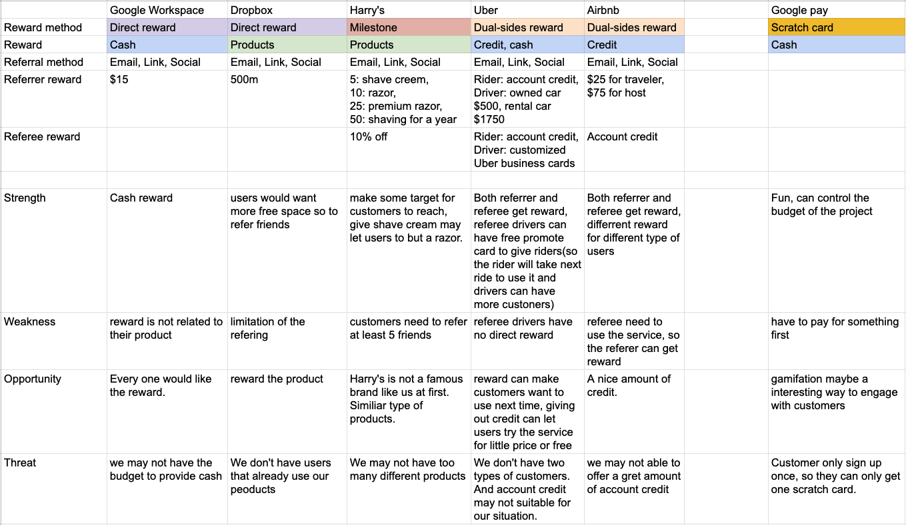

Ethos
May 2018 - Jan 2019
Internship
Summary
Brief: During the internship at WEKND Studio, I participated in this project. It’s a referral program research for new tooth brush prelaunch website.
My role: UX research, wireframes, prototype.
Project Overview
Before our product going on a campaign, we thought we need to have a prelaunch website to gain more awareness from the public. We found there are many referral programs and we felt it might be an opportunity to acquire customers more efficiently.
Therefore my job is to do the research and understand different referral programs and apply the analysis to help make the decision. After that I will conduct the design of website.
Competitor Research
I researched 6 referral program to see how different product execute their referral program. By doing this, I can see how other successful referral program work, and to find the design opportunity of our program. So, I find several different well-known referral program, and apply SWOT analysis method to see what we can learn and avoid.
I sorted these referral programs into three types. The first one is "direct reward", the customers can get the reward right after the referees sign up. another one is "dual-sides rewards", it is similar to the first one but not only referrers can get the reward but referees. The last one is "milestone", the referrer's reward will become bigger as more people sign up by the links.
In terms of rewards, two of them provide their products and only one of them uses cash as a reward. The two "dual-sides rewards" products provide account credit for both referrers and referees. Most of the rewards tend to make customers use their products. For example, account credit can only be used on their products, so customers can try them at a low cost.
Besides those referral programs, I found another interesting way to engage users. Google pay had provided a scratch card every time users purchase through Google pay. There would be a possibility to get a huge amount of cash. Hence, users would try to get more scratch cards to get the great prize.
All in all, the referral programs mean to make more customers sign up and become one of their customers. Hence, it is important to let referees try the product not just sign up. Giving referees rewards can not only make them more willing to sign up but also a chance to find potential customers. Also, providing products or account credit as rewards can let customers experience the products first. These may work for new brands which the public is not familiar with.
Interview
We conducted interviews to understand people's thoughts about referral programs and how they feel about trying new products.
The goal of the interview is to understand people's experience of referral programs and trying new products. We set two key questions "1. What makes people participate in the referral program? 2. How people feel about new products?" So we can focus on what we are trying to understand. Then, we designed the interview based on these two questions. Besides, before starting the first question, we need to explain what a referral program is because some people may participate in a referral program but did not know it's called "referral program". Furthermore, by explaining, interviewees can recall the memory of their experience with referral programs.
After we collected the information, we tried to find the details in the conversation by highlighting key points and labeling the information. Subsequently, we found that most interviewees are motivated by the rewards. On the other hand, all of them will sign up for the referral program if they receive referral links from their friends. The reasons for that would be " my friends asked me, so I would try to help them get the reward." Four of them received or shared the links through texting apps, and one has tried the links from influencers.
All of them would be willing to try new products, but some said that although they are willing to try if the product cost a lot they will consider if it is worthy. Friends' recommendations would make them all more willing to try new products because if their friends have recommended there must be some reasons the product worth a shot.
Overall, friends' recommendations would have an impact on people's attitudes toward a new product and referral links. Furthermore, rewards play an important part in the referral program. It would be the most crucial reason for customers to participate in a referral program. Hence, what types of rewards we are going to offer should be considered.
User Journey Map
I also created a user journey map with interview information to see the situations in different stages of the referral process.

To sum up, in the research stage we have applied three methods to collect information and data related to or topic. So, before we jumping into the ideation or brainstorming part, we need to define the problem that we found. With the problem, we can break it into several small pieces and solve them step by step.
Define Problems
Our purpose for the referral program is to make people sign up and refer or even purchase as many as possible. Therefore, our question is how to make customers interested in our referral program. We need to consider both our purpose and some problems we found in the research stage.
It can be seen that rewards would be the most important reason customers sign up for the product, and this would reflect our purpose. So, we need to find the balance between the reward and business aspects. On the other aspect, we can see that people's emotion rate is low at sign-up and sharing stages. Yet, improving the experience of these stages may help more people participate in the program.
Problem framing: How might we _________ to improve sign up experience.
Suggestion
From the research and problem stages, there would be three suggestions for the later part of the process.
1. Providing rewards for both referrer and referee, or even new customers.
2. Find the balance between reward, business strategy, budget.
3. Improve experiences of some hard stages of the user journey.
Ideation
We started to general different ideas based on our goal and the research results. From the secondary research, we were thinking about what we can learn and use in our program. Based on our product which is a toothbrush, we found that Harry's products are more similar to ours which are both toiletries. On the other hand, Harry's was not a famous brand at first, but it's a successful referral program. Thus, we think it would be a great example for us to design our own referral program. In terms of reward, while cash or account credit would be widely accepted, to consider our goal and budget, we may not able to provide. What we can do would be providing our product or discount. Although account credit would be seen as cash that customers can spend on their products, while it still a method to let customers try their products at a low cost. Hence, providing discounts may work. Not only discounts we need to offer, but our product can be provided in our referral program so that customers who are interested in our product can try it for free. Besides, providing some of our products may let users want to buy other products from us.
In terms of the sign up experience, we will need to figure out how to improve it. We first think that providing an easy sign up method may help. While this is what others have, we need to find out another way to make people more willing to sign up. At this time, my partners were discussing the price of our product, so we came up with an idea that makes the sign up experience more interesting. To combine the requirement of collecting what price customers would accept and scratch card from Google pay. We let customers guess the prices of our product while signing up and if the prices they guess are in a certain range compare to the actual price, they can get a big reward. By doing this, we can make a fun sign up experience while collecting what people think our product worth.
Referral Program Decision
From the ideation part, we think the success of Harry's would be a great example while the reward for each stage of the milestone would need further discussion. Yet, due to the success and product type of Harry's. We think "milestone" would fit our product. The success of Harry's also means that there was a great number of customers sign up and purchase their product which is also our goal for the referral program.
Hence, we have decided the frame of the referral program. We will apply "milestone" referral method and provide referees and new customers with discounts. A "guess the price" event will at the sign up page to provide a fun moment for users to sign up.
Version 1
Based on the decision, I try to craft the user flow, sitemap, and wireframe. The website would be quite simple and focus on introducing products and referral program.
User Flow V1

Webmap V1

Wireframe V1
After I created the wireframe, I make a simple prototype to test the flow of the website. We found that sign up, login, and track referral program are in different pages would be too complex. So, I conduct another version to solve it.

Version 2
To solve the problem, I used a slide-in page for those page to let users get into the sign up page easier and faster.
User Flow V2

Webmap V2

Wireframe V2

Interaction
At the same time, my partners want a Parallax Scrolling to let user look at the part of the brush as they want. So, I used HTML/CSS and JavaScript to build a prototype to try.